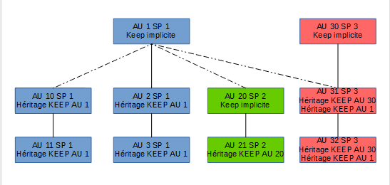
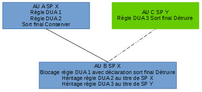

Positionner des règles de gestion dans la solution logicielle Vitam
Les archives sont soumises à des règles pour la gestion de leur cycle de vie, leur communication, leur diffusion ou leur réutilisation. Le standard d’échange de données pour l’archivage (SEDA) permet d’exprimer ces règles sous forme de métadonnées de gestion.
Présentation des règles de gestion et des mécanismes d’héritage
Déclaration des règles de gestion
Les règles de gestion peuvent être associées dans la solution logicielle Vitam unitairement aux unités archivistiques standard ou de plan de classement ou à l’ensemble d’un SIP. Il est ainsi possible de définir des règles valables pour une unité archivistique en particulier, pour une unité archivistique et ses filles ou pour l’ensemble des unités archivistiques transférées.
Structure des règles de gestion
Sept catégories de règles de gestion peuvent s’appliquer aux archives et ont été modélisées dans le SEDA :
Catégorie de règle |
Description de la règle |
Réglementation associée |
Dénomination de la catégorie dans le SEDA |
|---|---|---|---|
Durée d’utilité courante (DUC) |
Durée de « conservation » définie dans les autorisations de création de traitement automatisé |
Loi n° 78-17 du 6 janvier 1978 modifiée relative à l’informatique, aux fichiers et aux libertés (loi CNIL), notamment son article 6 |
StorageRule |
Durée d’utilité administrative (DUA) |
Durée de conservation des archives définie dans le cadre d’un accord entre les services producteurs d’archives et les services d’archives |
Code du patrimoine, livre II, art. L212-2 |
AppraisalRule |
Délai de communicabilité |
Délai pendant lequel la communication d’archives publiques à des tiers est soumise à une autorisation de l’administration des archives sur demande motivée |
Code du patrimoine, livre II, art. L213-1 et suivants |
AccessRule |
Durée de réutilisation |
Durée pendant laquelle la réutilisation des informations publiques est soumise à restriction : |
Code des relations entre le public et l’administration, livre III, titre II |
ReuseRule |
Délai de diffusion |
Délai pendant lequel la diffusion en ligne de données personnelles est soumise à une autorisation de l’administration |
Loi n° 78-17 du 6 janvier 1978 modifiée relative à l’informatique, aux fichiers et aux libertés (loi CNIL) |
DisseminationRule |
Durée de classification |
Durée pendant laquelle une information ou un support est protégé au titre du secret de la défense nationale. |
Arrêté du 30 novembre 2011 portant approbation de l’instruction générale interministérielle n°1300 sur la protection du secret de la défense nationale, notamment son article 46 |
Classification Rule |
Gel |
Période pendant laquelle une information ou un support ne doit faire l’objet d’une élimination et peut être soumis à des droits particuliers |
HoldRule |
Au sein de chaque catégorie de règle, une unité archivistique (ou un SIP dans son ensemble) peut porter :
une ou plusieurs règles de gestion spécifiques caractérisées par : - un identifiant de la règle (RuleId, obligatoirement présent dans le référentiel des règles de gestion* du tenant) ; - une date de départ pour l’application de la règle (StartDate) sous la forme année-mois-jour ; - une date d’échéance (EndDate), calculée automatiquement par la solution logicielle Vitam sous la forme année-mois-jour ;
des propriétés spécifiques à la catégorie : - pour la durée d’utilité administrative (AppraisalRule) : un sort final (FinalAction), avec comme valeur possible « Conserver » (Keep) ou « Détruire » (Destroy) ; - pour la durée d’utilité courante (StorageRule) : un sort final (FinalAction) avec comme valeur possible « Accès restreint » (RestrictAccess), « Transférer » (Transfer) ou « Copier » (Copy) ; - pour la durée de classification (ClassificationRule) : le niveau de classification (ClassificationLevel), l’émetteur de la classification (ClassificationOwner), les mentions additionnelles de limitation du champ de diffusion (ClassificationAudience), la date de réévaluation du niveau de classification (ClassificationReassessingDate), la nécessité d’une autorisation pour procéder à la réévaluation (NeedReassessingAuthorization) ;
des attributs spécifiques à une règle de gel (HoldRule) : la date de fin du gel (HoldEndDate), l’émetteur du gel (HoldOwner), la raison du gel (HoldReason), la date de réévaluation du gel (HoldReassessingDate), le blocage du reclassement de l’archives gelée (PreventRearrangement) ;
des métadonnées de gestion d’héritage : - pour bloquer l’héritage de toutes les règles pour la catégorie (balise PreventInheritance avec comme valeur « true » ou « false ») - pour bloquer l’héritage d’une règle ciblée par son identifiant (balise RefNonRuleId avec indication de l’identifiant de la règle bloquée).
Il est possible de renseigner un identifiant de règle sans donner de date de départ, par exemple quand la date de clôture du dossier n’est pas encore connue dans le cadre d’un archivage au fil de l’eau. Dans ce cas, cependant, la solution logicielle ne pourra pas calculer de date d’échéance et la règle ne pourra pas s’appliquer.
Il est possible pour une unité archivistique, dans une même catégorie de règle, de déclarer plusieurs règles. Cette possibilité est surtout utile pour la durée de communicabilité (AccessRule), une même unité archivistique pouvant contenir plusieurs types d’informations protégées par la loi.
Certaines propriétés sont obligatoires dès lors qu’une règle est indiquée dans cette catégorie :
pour la durée d’utilité administrative et la durée d’utilité courante, le sort final ;
pour la durée de classification, le niveau de classification et l’émetteur de la classification. Les propriétés sont associées à la catégorie et non à une règle particulière. Ainsi, pour une unité archivistique donnée, il est possible d’indiquer plusieurs identifiants de règles de durée d’utilité administrative, mais un seul sort final. Les attributs sont associés à une règle particulière. Ainsi, pour une unité archivistique donnée, il est possible d’indiquer plusieurs identifiants de règles de gel et des attributs comme une raison par chacun d’eux.
L’utilisation des balises PreventInheritance et RefNonRuleId nécessite de redéfinir une propriété pour les catégories de règles qui en attendent une, même si aucune règle spécifique n’est définie. Les catégories de règles concernées sont : StorageRule, AppraisalRule et ClassificationRule. Ainsi, pour une unité archivistique qui bloque tout héritage dans la catégorie « Durée d’utilité administrative » sans redéfinir de règle, un sort final doit quand même être indiqué pour cette unité.
Pour les archives soumises à des conditions particulières d’application des règles de communicabilité ou de gestion, comme les archives versées sous protocole ou avec un contrat de don ou de dépôt, il est possible d’indiquer que la mise en œuvre des règles de gestion est soumise à autorisation via la balise NeedAuthorization.
Mécanisme général d’héritage des règles et des propriétés
Pour chaque catégorie de règles, les règles spécifiques et les propriétés ou attributs portés par une unité archivistique sont héritées par ses filles, sauf cas particuliers de blocage de l’héritage.
Une unité archivistique hérite des propriétés des unités parentes, sauf :
si l’unité redéfinit localement la propriété
si l’héritage de la catégorie de règles est bloqué via la balise PreventInheritance Une unité hérite des règles de gestion et des attributs des unités parentes, sauf :
si l’unité redéfinit localement la même règle (même identifiant - RuleId, avec ou non une date de départ différente)
si l’héritage de la catégorie de règles est bloqué via la balise PreventInheritance
si l’unité bloque spécifiquement une règle en particulier (balise RefNonRuleId)
Cas particulier de la propriété définie localement qui l’emporte sur les propriétés héritées, même en l’absence de blocage explicite d’héritage
Exemple : si une unité archivistique hérite d’un parent ayant le même service producteur une règle de durée d’utilité administrative « 5 ans » avec un sort final « conserver » et définit localement une autre règle « 10 ans » avec un sort final « détruire », cette unité aura deux durées d’utilité administrative, mais un seul sort final (« détruire »), au titre du service producteur principal de l’unité archivistique.
AU 1
Déclaration de la règle A, date de départ X
Déclaration de la propriété « Conserver »
AU 2
Déclaration de la règle B, date de départ Y
Déclaration de la propriété « Détruire »
Héritage de la règle A, date de départ X
Héritage de la propriété « Conserver » bloqué de facto
Cas particulier du traitement des redéclarations de règles Exemple : si une unité archivistique AU 1 déclare une règle A avec une date de départ X et qu’une unité archivistique AU 2, fille de cette première unité archivistique AU 1, déclare la même règle A avec une date de départ Y, alors l’unité archivistique AU 2 aura pour date de départ du calcul de la règle la date Y et les unités archivistiques filles de l’unité archivistique AU 2 n’hériteront de la règle A qu’en tant que filles de l’AU 2, c’est-à-dire avec la date de départ Y.
AU 1
Déclaration de la règle A, date de départ X
AU 2
Déclaration de la règle A, date de départ Y
Héritage de la règle A avec la date de départ X bloqué de facto
AU 3
Héritage de la règle A avec la date de départ Y
Il est recommandé d’utiliser la fonctionnalité de blocage d’héritage quand l’unité archivistique et ses filles ont des règles différentes à appliquer et seulement si des règles ont été définies par ses parentes.
Quand aucune règle n’est définie par les unités archivistiques parentes, il est déconseillé de bloquer les héritages des unités archivistiques filles par principe.
Pour donner une date de départ différente pour une même règle, la redéclaration de la règle par l’unité archivistique fille sans blocage de l’héritage suffit.
Calcul des règles et propriétés applicables à une unité archivistique
Dans la solution logicielle Vitam, seules les unités archivistiques déclarant une règle sont concernées par le calcul de l’échéance et l’enregistrement des informations sur les règles en base.
Les autres unités archivistiques n’ont pas de règles en propre enregistrées en base. Les règles qui leur sont applicables, héritées des unités archivistiques parentes, sont calculées lorsque des opérations qui les concernent sont mises en œuvre (demande de consultation, mise en œuvre des sorts finaux), sans être conservées en base.
Quand les règles sont déclarées au niveau du SIP (bloc ManagementMetadata) pour toutes les archives transférées, seules les unités archivistiques à la racine du SIP porteront ces règles en base. Dans le cas particulier où la même règle est déclarée par les unités archivistiques racines avec des dates de départ différentes, leur date de départ respective l’emporte sur celle déclarée dans le bloc ManagementMetadata.
Lors du calcul des règles applicables à une unité archivistique, la solution logicielle Vitam associe aux règles le service producteur principal de l’unité qui a déclaré la règle et fait de même pour les propriétés.
Ceci permet de connaître le service producteur à l’origine d’une règle de gestion, pour pouvoir par exemple solliciter les autorisations d’élimination nécessaires dans le cas de la règle de durée d’utilité administrative.
Il est possible de demander l’indexation en base des règles et propriétés portées en propre comme héritées par une unité archivistique afin de faciliter par la suite le filtrage des unités archivistiques en fonction des règles de gestion qui leur sont applicables. Le niveau des informations indexées dépend du paramétrage de la plate-forme (cf. vademecum Le paramétrage fonctionnel d’une plate-forme utilisant la solution logicielle Vitam).
Définition d’un sort final implicite pour la durée d’utilité administrative
Dans le cas spécifique de la durée d’utilité administrative, si l’unité archivistique ne déclare pas de sort final et ne l’hérite pas non plus, elle est implicitement considérée par la solution logicielle Vitam comme devant être conservée et cette propriété implicite peut être héritée par ses descendants.
Ainsi, le premier niveau d’un SIP (unité racine), sauf s’il définit une information contraire, est considéré comme devant implicitement être conservé (propriété « KEEP » implicite). Cette propriété implicite est alors définie localement par la solution logicielle Vitam et est héritée par les éventuelles unités archivistiques filles de l’unité racine.
Cette propriété implicite est calculée à l’affichage des règles de gestion, mais n’est pas enregistrée en base. Elle ne sera donc pas exportée lors de la génération d’un DIP par exemple.
Comportement de l’héritage du sort final implicite lors des rattachements
Les SIP figurés dans le schéma ci-dessous ne définissent aucun sort final pour la catégorie de durée d’utilité administrative.
Le premier SIP (AU 1, AU 2 et AU 3) a pour service producteur SP 1.
Un deuxième SIP de même service producteur (AU 10 et AU 11) est rattaché à l’AU 1.
Un troisième SIP de service producteur SP 2 (AU 20 et AU 21) est rattaché à l’AU 1.
Un quatrième SIP (AU 30, AU 31 et AU 32) a pour service producteur SP 3 et une de ses unités archivistiques non racine est rattachée à l’AU 1.

Le comportement dans la solution logicielle Vitam est le suivant :
Cas 1 : une unité archivistique racine rattachée lors de l’entrée à une unité archivistique de même service producteur qui porte un sort final KEEP implicite hérite ce sort final dans la mesure où elle n’en définit pas elle-même (cas de l’AU 10).
Cas 2 : une unité archivistique racine rattachée lors de l’entrée à une unité archivistique de service producteur différent qui porte un sort final KEEP implicite définit localement au titre de son service producteur un sort final implicite et cette définition locale bloque l’héritage du sort final implicite du service producteur de rattachement (cas de l’AU 20).
Cas 3 : une unité archivistique non racine rattachée lors de l’entrée à une unité archivistique de même service producteur qui porte un sort final KEEP implicite et à une unité archivistique de service producteur différent portant également un KEEP implicite hérite les deux propriétés et n’en redéfinit pas localement (cas de l’AU 31).
Positionnement des règles de gestion dans la solution logicielle Vitam
Où positionner les règles de gestion ?
Les règles peuvent être déclarées à des niveaux différents de l’arborescence d’unités archivistiques, en fonction des résultats attendus pour les traitements à échéance : traitement identique de toute une entrée, traitement identique de toutes les pièces d’un dossier, traitement spécifique de chaque document.
Dans le bordereau de transfert, les règles sont positionnées dans le bloc ManagementMetadata si elles doivent s’appliquer à l’ensemble du SIP ou dans le bloc Management des différentes unités archivistiques si elles sont spécifiques à ces unités.
Dans l’univers papier, les règles étaient positionnées au plus haut niveau possible de l’arborescence et les niveaux inférieurs déclaraient leur date de départ pour le calcul de l’échéance des règles. Dans le modèle SEDA, la date de départ du calcul de l’échéance ne peut être exprimée sans déclaration de l’identifiant de la règle. Il n’est donc pas possible de déclarer au niveau d’une unité archivistique une règle qui serait héritée par ses filles qui déclareraient à leur niveau uniquement les dates de départ spécifiques du calcul de l’échéance.
Dès lors qu’on veut déclarer une date de départ spécifique, il convient de déclarer l’identifiant de la règle et la date de départ sur cette unité ;
Si l’on déclare une règle sans date de départ, aucune application par la solution logicielle de cette règle ne sera possible.
Peut-on positionner des règles de gestion sur des unités de plan de classement ?
Dans le cas d’une implémentation qui intègre un plan de classement auquel sont rattachées les unités archivistiques standard, le plan de classement peut porter des règles de gestion qui seront héritées par les unités rattachées.
Dans les pratiques de records management, il est d’usage de faire porter sur le plan de classement les règles applicables aux pièces qui seront classées dans cette rubrique.
Toutefois, dans la solution logicielle Vitam, dans cette configuration une date de départ commune pour toutes les archives rattachées doit être portée par le plan de classement pour permettre la mise en œuvre des actions à échéance. Dès lors qu’une unité archivistique rattachée doit avoir une date de départ de calcul de la règle différente, la règle devra être redéclarée sur cette unité archivistique. Mettre la règle de gestion sur une unité archivistique de plan de classement n’est donc envisageable que dans des cas d’unités archivistiques très homogènes.
Attention, si une règle de DUA est portée par une unité de plan de classement avec un sort final « Détruire », à échéance de cette DUA l’unité archivistique de plan sera éliminée comme ses descendantes.
Il n’est donc pas recommandé de porter des règles sur une unité archivistique de plan de classement qui a vocation à être conservée de manière pérenne, c’est-à-dire qui ne peut pas porter une date de clôture à compter de laquelle appliquer les traitements à échéance ou qui ne doit pas être éliminée.
Il peut rester intéressant d’associer intellectuellement une règle à un niveau de plan à titre de contrôle par l’archiviste des valeurs déclarées dans les unités rattachées.
Quand déclarer une règle au niveau du dossier ?
Lorsqu’une arborescence d’unités archivistiques a une même règle applicable à l’issue d’un délai calculé à partir de la date de clôture du dossier, la règle sera portée par l’unité archivistique de niveau dossier et héritée par les unités archivistiques filles. La date de départ pour le calcul de la règle peut être ajoutée ultérieurement, si elle n’est pas connue lors des premiers versements, pour permettre le calcul de l’échéance.
Cas d’usage : un dossier de personnel est ouvert dès la prise de fonction d’un agent et est alimenté au fur et à mesure par les pièces du dossier. Lorsque le dossier ne sera plus actif, sa date de clôture sera portée sur l’unité archivistique du dossier, permettant le calcul du délai de communicabilité qui sera appliqué par héritage à toutes les pièces.
Attention, tant que le dossier ne sera pas clos et ne déclarera pas de date de départ pour le calcul de l’échéance de la règle, le calcul du délai de communicabilité ne sera pas possible. Dans le cas d’une durée d’utilité administrative, même si un sort final « Détruire » est déclaré, le dossier et ses pièces ne seront pas considérés comme éliminables tant que la date de départ de la règle n’aura pas été déclarée dans le système, permettant le calcul de la date d’échéance.
Quand déclarer une règle au niveau de la pièce ?
Cas 1:
Lorsque les unités archivistiques sont soumises à une même règle pour toute l’arborescence, mais que cette règle doit s’appliquer pour chaque pièce en fonction de la date du document et non au niveau du dossier ou du sous-dossier, chaque pièce devra déclarer la règle et la date de départ du calcul de l’échéance.
Cette configuration permet d’assurer que l’échéance sera calculée au plus juste et que les actions à échéance pourront être mises en œuvre sans tarder, qu’il s’agisse de communication, d’élimination ou de transfert. Cas d’usage : dans un dossier de captation de la Hadopi, chaque document est éliminé à la date anniversaire de la captation. Le dossier auquel les captations sont rattachées est conservé sans date d’échéance. Il sera inutile de déclarer la règle au niveau du dossier, sauf si l’on souhaite éliminer celui-ci à une échéance donnée, une fois toutes ses pièces éliminées.
Cas 2:
Lorsque les unités archivistiques sont soumises à une règle commune pour toute l’arborescence avec une date de départ du calcul de l’échéance commune, sauf pour un sous-dossier ou une pièce pour lequel cette règle s’applique mais avec une autre date, cette unité archivistique de sous-dossier ou de pièce devra redéclarer la règle avec la date de départ spécifique.
Cas d’usage : dans un dossier d’affaires composé de sous-dossier a la même durée d’utilité administrative que les autres, mais une date de départ spécifique pour le calcul de sa durée d’utilité administrative.
Cas 3:
Lorsque les unités archivistiques sont soumises à une règle commune pour toute l’arborescence avec une date de départ du calcul de l’échéance commune, sauf un sous-dossier ou une pièce pour lequel cette règle ne s’applique pas, cette unité archivistique de sous-dossier ou de pièce devra bloquer l’héritage de cette règle en particulier (balise RefNonRuleId) ou l’héritage de toutes les règles de cette catégorie (balise PreventInheritance), sans oublier de déclarer une propriété localement le cas échéant.
Cas d’usage : dans un dossier d’agent, le dossier médical obéit à une règle de communicabilité particulière.
Cas d’usage : dans un dossier de procédure administrative non encore librement communicable, une pièce est librement communicable.
Cas d’usage : dans un dossier contenant des documents classifiés, un document a été déclassifié.
Attention : si une règle spécifique est bloquée dans une catégorie qui nécessite la déclaration d’une propriété (sort final de la durée d’utilité administrative par exemple), la propriété définie obligatoirement localement à l’occasion de l’utilisation de la balise RefNonRuleId bloquera l’héritage de la propriété des unités parentes, bien que des règles puissent être héritées de ces unités parentes dans cette catégorie. Cela pourra conduire à la non application de certaines règles héritées ou à une application d’un sort final contraire à celui porté par l’unité parente. Les annulations de règle ou d’héritage dans une catégorie doivent donc faire l’objet d’une étude précise pour chaque cas afin de bien s’assurer que les règles applicables à l’unité correspondent aux besoins métier.
Quel niveau de granularité adopter ?
En sus des cas présentés ci-dessus, le choix du meilleur niveau pour déclarer les règles de gestion pourra prendre en compte les possibilités offertes au service d’archives pour positionner des règles de gestion en fonction des modalités de génération du SIP.
Dans le cas de versements applicatifs, il est possible de prévoir que l’application productrice réalise des exports associant à chaque pièce la ou les règles applicables et la date de départ du calcul des échéances en fonction d’événements connus du système (date de validation du document, date de clôture d’une procédure…).
Pour des versements manuels, le renseignement des règles de gestion à la pièce peut se révéler chronophage. On favorisera en ce cas la déclaration au niveau du dossier ou du sous-dossier, et donc le traitement des archives par lot homogène pour l’application des règles de gestion.
Dans le cas d’une production très importante de documents sériels, on pourra souhaiter tenir compte des possibilités d’appliquer au plus juste une durée d’utilité administrative ou une durée d’utilité courante pour organiser très rapidement un transfert vers un autre SAE ou une élimination. En effet, il est possible de lancer chaque mois, voire chaque jour, des opérations d’élimination ou de transfert si des règles ont été positionnées, puisque la date d’échéance s’exprime sous la forme d’une date précise (jour-mois-année) et non d’une année uniquement.
Cas d’usage : dans le cas d’un organisme qui produit quotidiennement un très grand nombre de dossiers de remboursement, on pourra porter la DUA sur chaque dossier de remboursement pour éliminer quotidiennement les dossiers arrivés à échéance ou sur un nœud regroupant les dossiers produits chaque mois pour éliminer mensuellement les dossiers arrivés à échéance ou sur un nœud regroupant les dossiers produits chaque année pour éliminer annuellement les dossiers arrivés à échéance.
Précautions à prendre dans les héritages de règles pour la mise en œuvre du sort final
Dans le cas d’une élimination, si une unité archivistique a hérité une règle pour un service producteur sans avoir également une propriété de sort final au titre de ce même service producteur, la règle pourra ne pas s’appliquer.
Exemple : une unité archivistique A de service producteur X porte une règle de DUA 1 et une règle de DUA 2 avec comme sort final « Conserver ».
Sa fille, l’unité archivistique B, annule l’héritage de la règle de DUA 1 et doit pour cela redéclarer un sort final. Elle déclare le sort final « Détruire ».
L’unité archivistique B est rattachée à l’unité archivistique C de service producteur Y qui déclare la règle de DUA 3 avec comme sort final « Détruire ».

Lors du calcul des règles portées par l’unité archivistique, la solution logicielle Vitam indiquera pour l’unité archivistique AU B :
un sort final Détruire au titre du service producteur X,
une règle DUA 2 au titre du service producteur X,
une règle DUA 3 au titre du service producteur Y. Lors de la mise en œuvre de l’élimination, la règle DUA 1 pourra être appliquée car l’unité archivistique dispose d’une règle et d’une propriété au titre du service producteur X.
En revanche, la règle DUA 3 ne pourra pas être appliquée, faute de présence d’un sort final associé au titre de ce service producteur (la propriété définie localement au titre du service producteur X a bloqué l’héritage de la propriété de l’AU C).
L’unité archivistique AU B ne pourra ainsi pas être éliminée, puisqu’elle sera considérée comme devant être conservée pour l’unité archivistique parente AU C.
Rattacher des unités archivistiques à d’autres unités archivistiques peut entraîner des héritages complexes et empêcher la mise en œuvre des opérations d’élimination. L’archiviste devra identifier ces cas et procéder à des mises à jour des règles applicables à l’unité et/ou à des réorganisations d’arborescence pour pouvoir éliminer effectivement les unités archivistiques concernées.
Modification des règles de gestion
Les règles de gestion peuvent être modifiées dans le cadre d’une modification unitaire, d’une modification de masse ou à la suite de la mise à jour du référentiel des règles de gestion.
Dans le cadre d’une modification unitaire, il est possible de modifier les règles d’héritage, les règles déclarées par l’unité archivistique (identifiant de la règle, date de départ du calcul de l’échéance) et les propriétés ou attributs, d’ajouter des règles et des propriétés ou attributs ou de les supprimer. Ces modifications seront héritées par les unités archivistiques filles, sauf blocage de l’héritage.
Dans le cadre d’une modification de masse sur un lot donné, les mêmes éléments peuvent être modifiés, ajoutés ou supprimés. Ces modifications doivent respecter la structure des règles de gestion : ainsi, si un blocage de règle pour la catégorie de durée d’utilité administrative est posé sur un lot d’unités archivistiques sans être accompagné de la définition d’un sort final, seules celles qui portent en propre un sort final pour cette catégorie pourront être modifiées, les autres ne pourront pas l’être puisque le sort final est obligatoire pour cette catégorie de règle.
L’ajout d’une règle de gel sur un lot donné équivaut au gel de ce lot d’archives.
La mise à jour du référentiel des règles de gestion ne peut pas supprimer une règle déjà utilisée dans la solution logicielle Vitam.
En revanche, la durée d’une règle déjà utilisée dans la solution logicielle peut être modifiée. En ce cas, les dates d’échéance sont recalculées pour toutes les unités archivistiques qui portent cette règle en propre.
Pour en savoir plus, consulter le document VITAM. Règles de gestion.